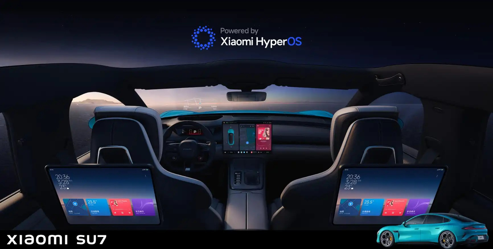
Nothing on this page is internal Xiaomi material. The pictures are of three kinds: Xiaomi’s own published images of the car, frames from publicly posted video of the car as it ships, and diagrams I drew myself to show how I worked. One photograph of a petrol car interior is a manufacturer’s press image, used to show what the controls looked like before. Where a screen is still missing I have said so, and I will replace it with my own capture from the car.
01What the car is trying to be
Xiaomi builds the car closer to an extension of the home than to transport. That claim is easy to make and hard to keep, and it gets decided in the moments when nobody is driving.
A nap mode on the centre screen. A rear screen that runs the seat massage. A keyboard that floats above the screen and leaves what is underneath it alone. Each one is a moment where the car stops being a vehicle, and the interface has to behave like a room.
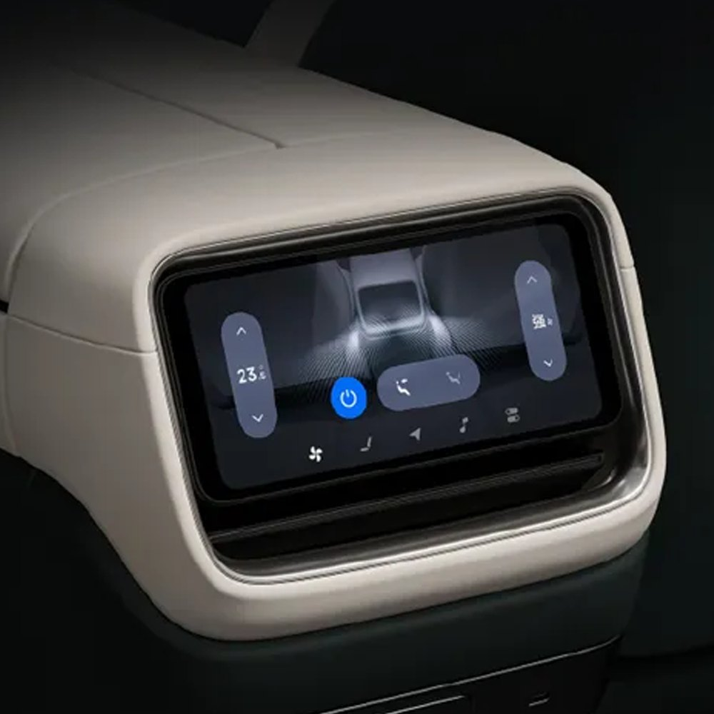
02What System UI is, and what I owned
Five screens in the cabin. I owned the centre screen and part of the rear screens.
System UI is the layer underneath all of it. It decides how something appears, where it sits, what it covers, and what happens to everything else while it is there. When it works, eight modules and three third-party keyboards read as one place.
Ten pieces of it were mine. Four of them have a section on this page and the § number jumps straight to it. The other six I have not written up yet.
- 01 Alive Bar design, and turning it into components §03
- 02 Keyboard input, domestic and overseas §04
- 03 The Google account binding flow for the overseas build Writing it up
- 04 Voice and camera permission design for Europe §05
- 05 A new System design for the European rental scenario §06
- 06 Eight full-scenario alarm designs for when the car is moving Writing it up
- 07 The rear screen massage interaction Writing it up
- 08 Customising the dock along the bottom of the centre screen Writing it up
- 09 Rest mode and camping mode Writing it up
- 10 Android Auto in the overseas cabin Writing it up
The cockpit won five iF Design Awards in 2025, including one for the Cockpit Alive System ↗. I joined as an HMI designer on that system.
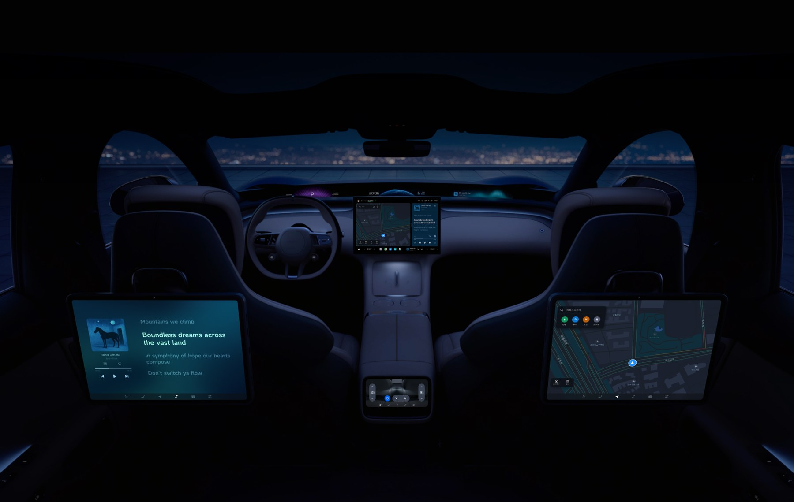
03Alive Bar
Touchscreen against physical buttons is an old argument in cars. On this car it stopped being an argument and turned into a group of people.
A lot of the buyers were leaving a petrol car for the first time, and the hand habits came with them. Driving, they wanted one press to finish the thing: colder, louder, demist. That group also skews older, and it is the same group least willing to talk to a voice assistant. The key is the shorter path anyway. Look down, tap, wait for a panel, find the control, tap it, close the panel — against one press without looking.
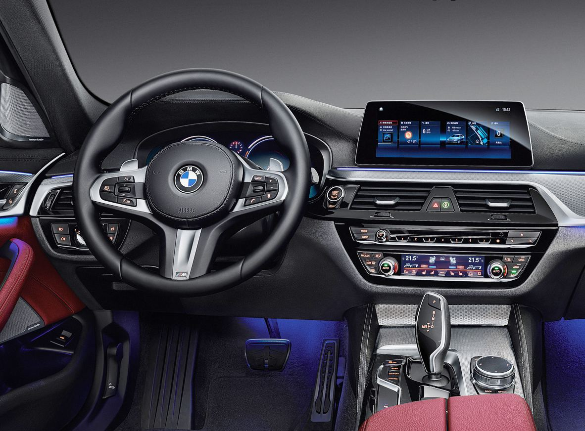
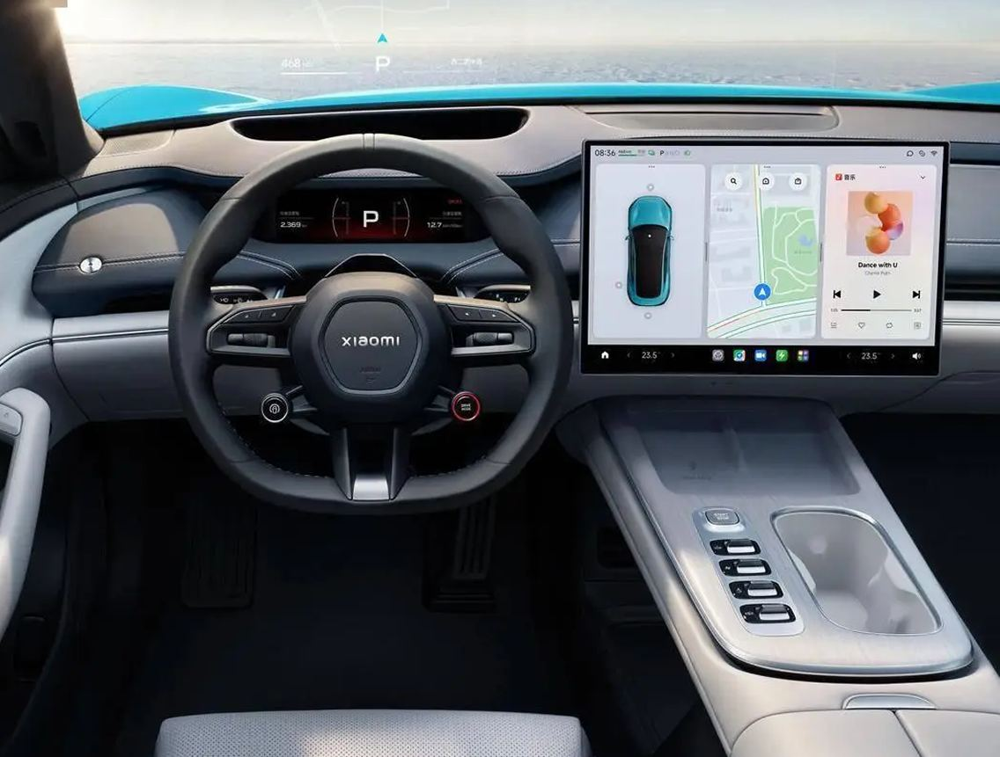
So the answer was to keep both. Xiaomi ships a physical key strip that magnets and screws onto the frame under the 16.1-inch centre screen. The things a hand reaches for without thinking sit one press away: temperature, volume, fan, brightness. The menu stays closed.
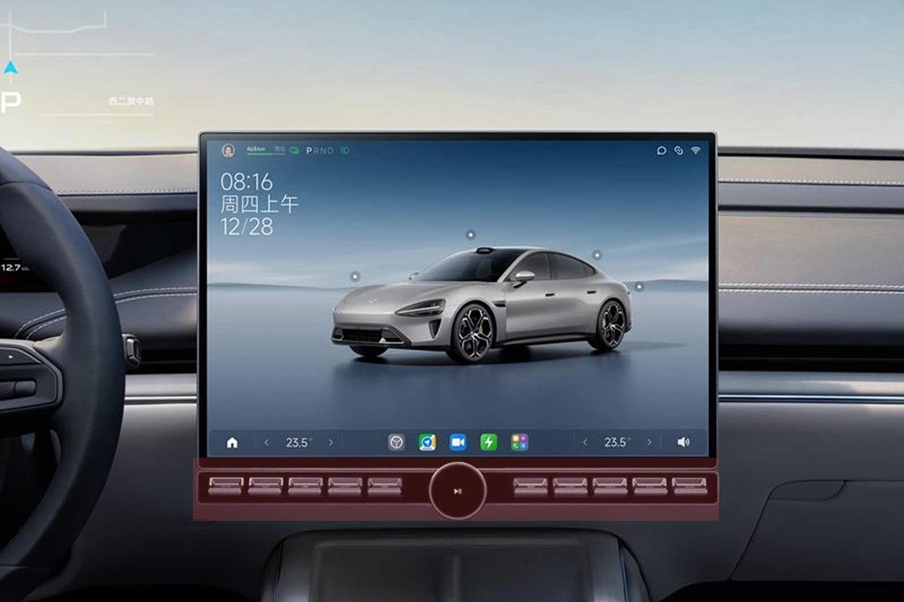
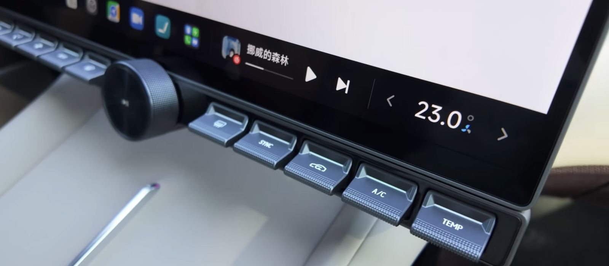
What I did on it
The physical keys were a large project across hardware, software and design. My part was System UI, the layer both entrances land on. I designed part of it, hunted the edge cases, wrote the detail specs and sorted out the logic of what happens during an interaction, turned the result into components so System UI could be extended with them, and took part of the handoff to the developers.
We watched how people reached for these controls and rebuilt the shortcut interaction on the centre screen around that, then shipped a new set of design components out of it.
Three taps, then one press
Setting the aircon to auto, before the strip existed. Every step happens on the screen, and the panel covers the thing you were looking at.
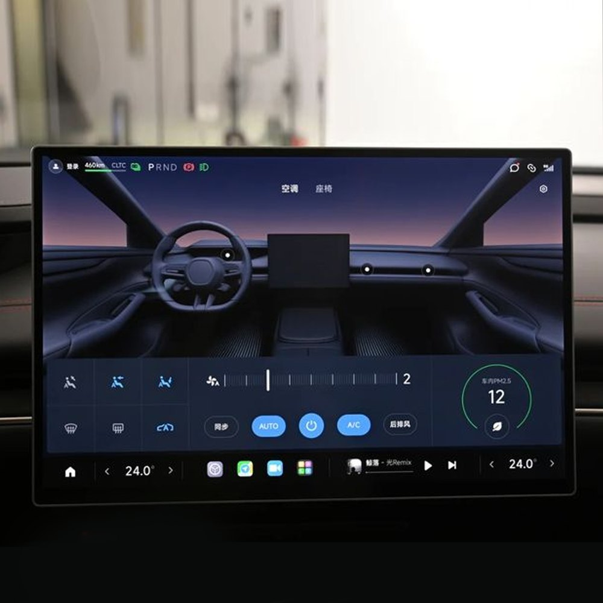
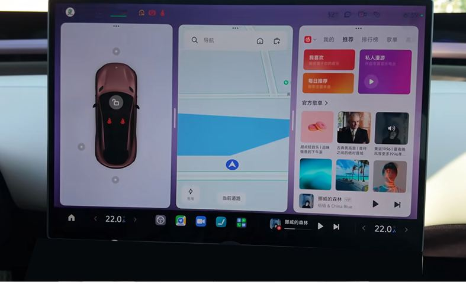
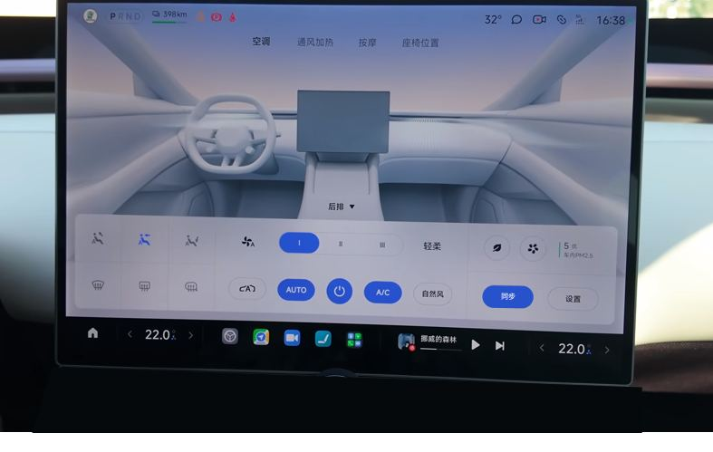
And with the strip on the frame:
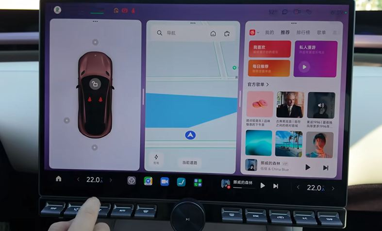
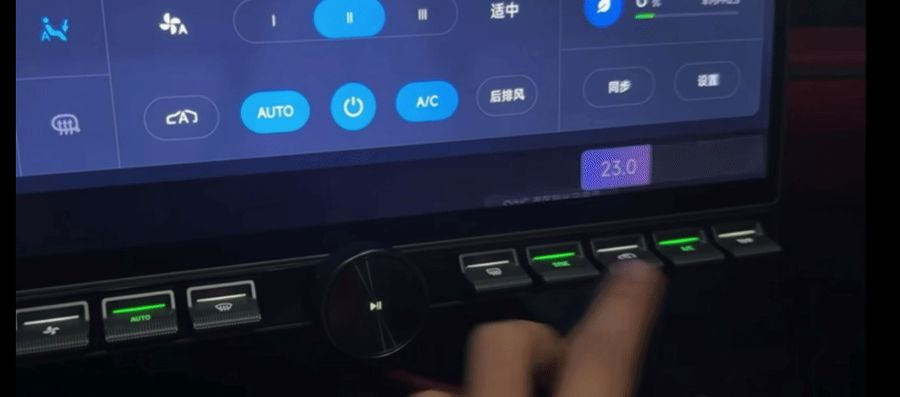
The full set of Alive Bar states and what each one covers. I am working out the right format for it.
What the strip and the bar were turned into for the other designers to build from.
The interactive version waits on Xiaomi to release it.
04Three keyboards, one rule set
This was the first thing I owned on the car.
Xiaomi’s rule is that the driving information stays visible while somebody is typing. So the keyboard floats at system level, and the cards underneath it keep working.
Three companies make the keyboards I had to serve: the partner already in the car, a new one for the Chinese build, and Google for the English one. Each popped up at its own height, covered its own amount of the screen, and took the layout apart in its own way. They also disagree with each other on when AI triggers, how word suggestions arrive, and what the network prompts do. The person in the car only feels that typing is inconsistent.
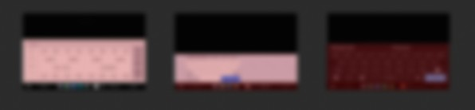
The pictures from here are reconstructions I drew afterwards to show the thinking.
Two problems, then. What proportion fits the screen the car now ships, and what to do about the functions no version is going to drop.
01 · The proportion
The screen had grown through the car’s own iterations, so the old ratio had stopped being the right one. I gave Figma Make the screen dimensions, the state of all three keyboards, and how large an area a driver’s gaze actually covers, and had it work the layout against those constraints. Then I moved things by hand inside it until one glance was enough to find a key.
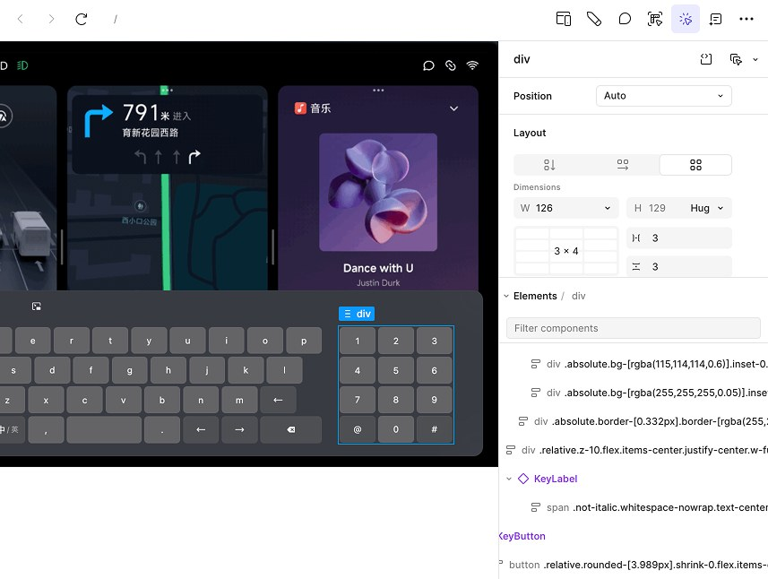
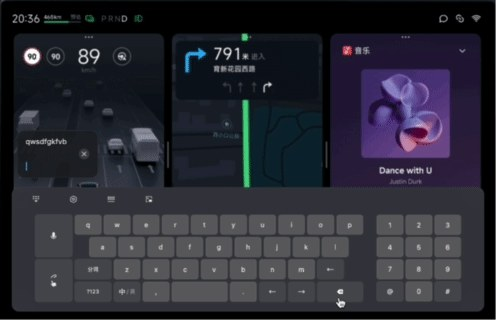
02 · The functions that stay
AI suggestions, word association, the network prompts. No version was going to drop them, so one rule had to hold all three vendors at once.
It shows the AI most clearly, it blocks the least sightline, and it mis-taps the least. The extra functions live in a floating box that appears when something triggers it, and the keyboard underneath stays where it is.
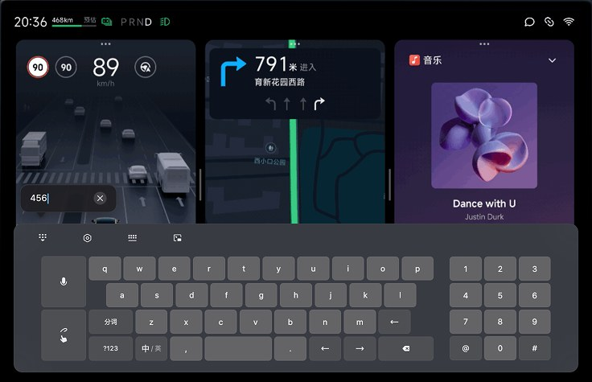
- One popup height, whatever the vendor ships.
- The keyboard floats. It leaves the layout underneath it alone.
- It keeps floating when the AI capsule appears.
- The English build never triggers the capsule.
Rule four is where this project turned into the next one.
Once the rules held, the permutations were work for a machine. I gave the constraints to Figma Make and it produced the state matrix across landscape and portrait, and I went back through and corrected it. That let me check usability against every state, and keep the result looking current, in the time it would have taken to draw a handful by hand.
Before, and what ships
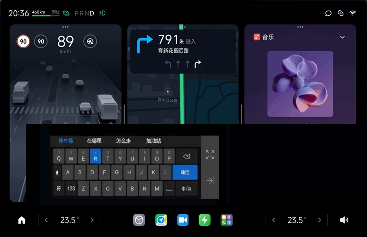
A screenshot from the car, once the system update lands.
The same thing with the car moving, wide enough to show what it covers and what it leaves alone.
The component library the keyboards were built against stays inside Xiaomi.
05A crowded top bar, and European privacy
Europe assumes the data is yours until you say otherwise, and that turns into interface.
Every time the camera, the microphone or the location is called, the person has to be told three times: as it starts, as it ends, and once it has fully stopped. That rule is European. The Chinese system runs on different defaults.
The place that has to hold all that is the top bar, which was already full and already built.
I worked with the Google UX and Android Auto teams on the answer. It is a permission point: one dot, at the end of the bar, that says something is live.
Android Auto was part of the same conversation. A European car is expected to hand its screen over to a phone, so the cabin had to be designed knowing that Android Auto would be running in it, and that the permission point had to keep meaning the same thing while it was.
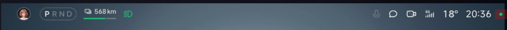
What the permission point looks like at each moment, and what each state means.
How the point was arrived at with the Google team.
The permission dialogs themselves stay inside Xiaomi.
06The rental case
In China a car is usually yours. In Europe it is often yours for three days.
A product built on “this is your space” has to answer what happens when the space belongs to somebody else next week. We started from the fleet component the domestic system already had, adapted it, and built three modes out of it: guest, account, and owner.
| Guest | Account | Owner | |
|---|---|---|---|
| Personal homepage | Session only | Their own | Their own |
| Password management | Closed | Their own | All of it |
| Driving modes | Use them | Use and save | Use, save and limit |
| Survives the handover | Nothing | Their settings | Everything |
Every surface that carries identity had to work in all three. Each one needed its own adapted component, and those went back into System UI, which now handles more scenarios than it did before.
The rental modes have yet to launch, so the screens stay inside Xiaomi.
07What came back, and what I took from it
Writing rules for a market with different defaults forces you to find the assumptions you never knew you had made. Some of those were worth fixing at home as well.
The permission point is the clearest one. It went back into the domestic System UI, on a market whose regulator never asked for it, because once you have seen a person told when the microphone is live, the version that leaves them guessing is harder to defend.
Cars run against the grain of everything else. Every other product I have designed wants more of your attention. This one wants as little as possible, because time on the screen is time away from the road.
That pushes all of it towards the intuitive. The control your hand finds without your eyes. The state you read in one glance. It is also why the home is the right model to build against: you do not read a room, you already know where things are.
Most of this job was making things I did not control agree with each other. Three keyboard vendors. A physical strip and a screen. Two markets with different ideas about who owns the data.
The design work sat in the rules. The screens were the proof that the rules held.

A Polaroid from the studio.